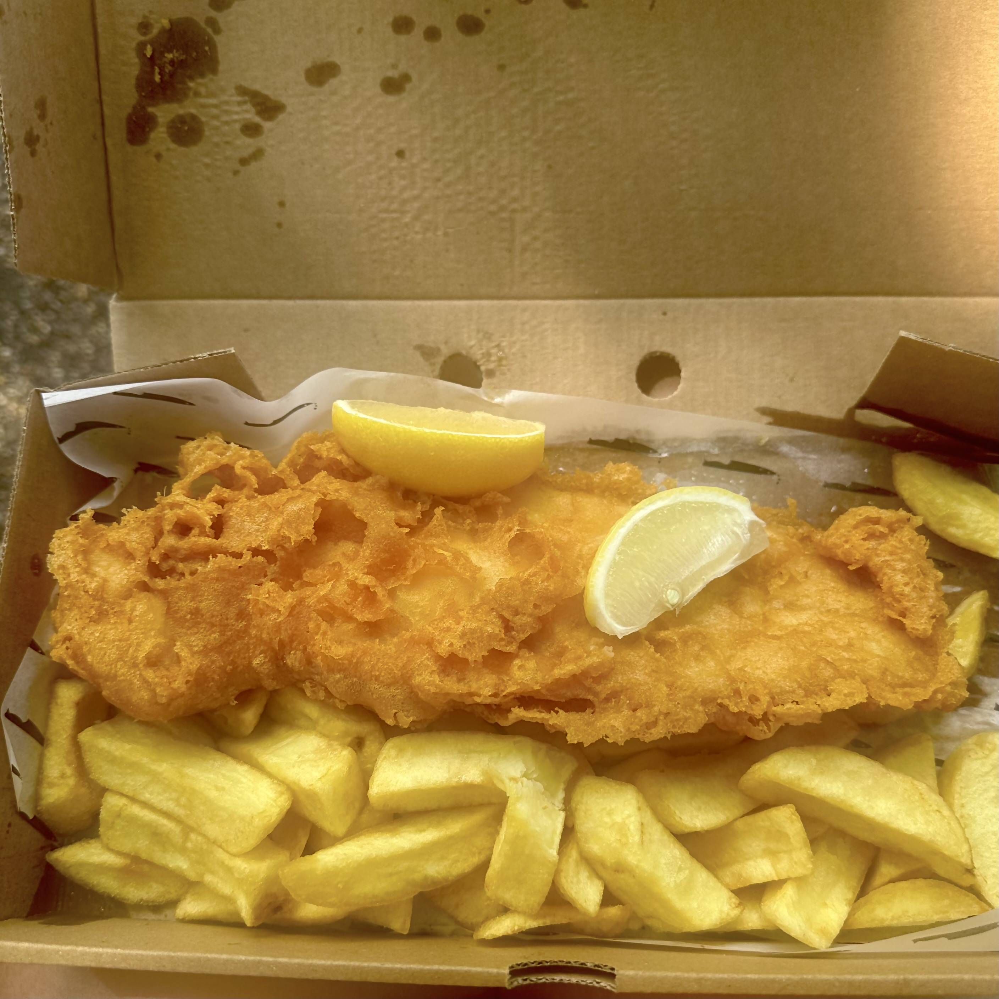

last weekend's excursion took me to Tynemouth.
basically, the River Tyne empties into the North Sea at its east end (the northeast coast of England).
Tynemouth site on the north bank of the River Tyne, at its mouth (go figure).
it was a cutesy, touristy downtown-y area, with a sizeable food/crafts market in the metro station.
there was a lady at the market selling needle-felted paintings of these round fluffy sheep grazing and vibing,
and I was very torn on whether or not to buy one for £35. steep price, yes, but what if I go back to the US and regret not buying it when I had the chance?

I also tried fish and chips from an award-winning restaurant (Longsands Fish Kitchen).
I'd been wandering around downtown waiting for them to open at 11:30am, and I was the first one in the door before I realized that gave me no time to decide what to order and commenced panicking.
I also had intended to dine in at the restaurant, but I think in my eagerness I accidentally ordered at their takeaway counter, which was in a separate room from their dining room (at least I assume...).
however, it ended up being okay, I got my fish and my chips with housemade tartare sauce and a side of mushy peas (apparently a staple side to fish and chips).
the fish itself (cod) was deliciously flaky, piping hot, and crisply fried (although the fry was a bit soggy on the bottom after a bit).
the chips, on the other hand, were quite mid IMO. thick-cut and very nicely creamy on the inside, but completely lacking any crisp on the exterior.
the mushy peas looked like pea puree with more peas (in various states of mushedness) added afterward, and they were too salty.
dipping the under-salted chips in the over-salted mushy peas turned out to be the strat, and I was able to enjoy the two of them together like so.
overall verdict: slightly underwhelmed. maybe I'm just not a big fish and chips girl?
after my fishy lunch, I walked around Tynemouth's downtown area and eventually turned up at the Tynemouth Priory and Castle overlooking the sea and the mouth of the Tyne.
the castle was built from sandy beige blocks, and parts of it were crumbled so that some walls (or corners of intersecting walls) were standing isolated, disconnected from the rest of the structure.
the moat has long been emptied of water and now houses a verdant population of grass and wildflowers, which I walked through to reach a gaggle of benches lined up along another vantage point of the sea.
many of these benches had plaques dedicating them to people, with flower holders on the side.
how heartwarming to think of locals walking along the coast every morning to brighten up their loved ones' bench with fresh blossoms.
the sea breeze smelled like sun-baked algae. I was hoping to see seals, but I think I'd have to go more north to Whitley Bay to do so.
the sun was very strong, especially since I left my sunglasses and hat at home (having foolishly doubted the sun's power).
I hopped on the afternoon metro back to Newcastle feeling nicely windswept and with the sun on the sea still in my mind's eye.
 after my fishy lunch, I walked around Tynemouth's downtown area and eventually turned up at the Tynemouth Priory and Castle overlooking the sea and the mouth of the Tyne.
the castle was built from sandy beige blocks, and parts of it were crumbled so that some walls (or corners of intersecting walls) were standing isolated, disconnected from the rest of the structure.
the moat has long been emptied of water and now houses a verdant population of grass and wildflowers, which I walked through to reach a gaggle of benches lined up along another vantage point of the sea.
many of these benches had plaques dedicating them to people, with flower holders on the side.
how heartwarming to think of locals walking along the coast every morning to brighten up their loved ones' bench with fresh blossoms.
after my fishy lunch, I walked around Tynemouth's downtown area and eventually turned up at the Tynemouth Priory and Castle overlooking the sea and the mouth of the Tyne.
the castle was built from sandy beige blocks, and parts of it were crumbled so that some walls (or corners of intersecting walls) were standing isolated, disconnected from the rest of the structure.
the moat has long been emptied of water and now houses a verdant population of grass and wildflowers, which I walked through to reach a gaggle of benches lined up along another vantage point of the sea.
many of these benches had plaques dedicating them to people, with flower holders on the side.
how heartwarming to think of locals walking along the coast every morning to brighten up their loved ones' bench with fresh blossoms.